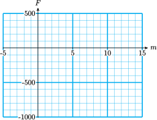

Section 8 Graphs of Linear Equations
Worksheet Lesson 2.3 Graphs of Linear Equations
Activity 8.1. Graphing Equations.
Jasmine's electricity company charges her $6 per month plus $0.10 per kilowatt hour (kWh) of energy she uses.
a.
Write an equation for Jasmine's electric bill, \(E\text{,}\) if she uses \(h\) kWh of electricity.
b.
\(\blert{\text{Make a table of values.}} \)
| \(h\) | \(E\) |
| 100 | |
| 400 | |
| 800 |
\(\blert{\text{Plot the points and draw the graph.}} \)
Activity 8.2. Cartesian Coordinate System.
1.
Give the coordinates of each point shown in the figure below.
\(A\)
\(B\)
\(C\)
\(D\)
\(E\)
\(F\)
2.
Graph the equation \(y=-2x+6\text{.}\)
-
Choose values for \(x\) and make a table of values. Choose both positive and negative \(x\)-values, as in the suggested table below.
\(x\) \(y\) \(-3\) \(\hphantom{000}\) \(y=-2(\alert{-3})+6 \) \(-1\) \(\hphantom{000}\) \(y=-2(\alert{-1})+6 \) \(0\) \(\hphantom{000}\) \(y=-2(\alert{0})+6 \) \(2\) \(\hphantom{000}\) \(y=-2(\alert{2})+6 \) \(4\) \(\hphantom{000}\) \(y=-2(\alert{4})+6 \) Plot the points and connect them with a straight line.
Activity 8.3. Using a Graph.
1.
Use the graph in Activity 8.2 to answer (a) and (b). Label the point on the graph that gives the answer.
Evaluate the expression \(-2x+6\) for \(x=-5\text{.}\)
Solve the equation \(-2x+6=10\text{.}\)
2.
Francine borrowed money from her mother, and she owes her $750 right now. She has been paying off the debt at a rate of $50 per month.
Write an equation for Francine's financial status, \(F\text{,}\) in terms of \(m\text{,}\) months from now.
-
Fill in the table. Negative values of \(m\) mean months in the past. (Francine's current financial status is -$750.)
\(m\) \(-5\) \(-2\) \(0\) \(2\) \(6\) \(10\) \(12\) \(F\) \(\hphantom{0000} \) \(\hphantom{0000}\) \(\hphantom{0000}\) \(\hphantom{0000}\) \(\hphantom{0000}\) \(\hphantom{0000}\) \(\hphantom{0000}\) Graph your equation, using the values in the table.
Use your graph to answer the questions, and label the point on the graph that gives the answer:
What will Francine's financial status be 7 months from now?
When was Francine's financial status -$900?
3.
Evaluate \(\quad 3a(a-b)\quad \) for \(a=-4 \) and \(b=-6\)
4.
Evaluate \(\quad -2(a+b)-ab\quad \) for \(a=6\) and \(b=-3\)
Wrap-Up 8.1.
In this Lesson we practiced the following skills:
Graphing a linear equation
Plotting points on a Cartesian coordinate system
Using a graph to answer questions about a model
In Activity 8.1, what are the intervals represented by each grid line on the axes?
In Activity 8.2, what is the \(x\)-coordinate of the point with \(y\)-coordinate 16?
In Activity 8.3, problem 2, if you increase the value of \(m\text{,}\) does \(F\) increase or decrease?
Complete the table of values and graph the equation.
1.
\(y=4-2x\)
| \(x\) | \(-3\) | 0 | 2 | 5 |
| \(y\) | \(\hphantom{000} \) | \(\hphantom{000} \) | \(\hphantom{000} \) | \(\hphantom{000} \) |

2.
\(y=-6+3x\)
| \(x\) | \(-1\) | 0 | 2 | 4 |
| \(y\) | \(\hphantom{000} \) | \(\hphantom{000} \) | \(\hphantom{000} \) | \(\hphantom{000} \) |
3.
\(y=-2+\dfrac{4}{3}x \)
| \(x\) | \(-3\) | 0 | 3 | 6 |
| \(y\) | \(\hphantom{000} \) | \(\hphantom{000} \) | \(\hphantom{000} \) | \(\hphantom{000} \) |
4.
\(y=2-\dfrac{3}{4}x \)
| \(x\) | \(-8\) | -4 | 0 | 8 |
| \(y\) | \(\hphantom{000} \) | \(\hphantom{000} \) | \(\hphantom{000} \) | \(\hphantom{000} \) |